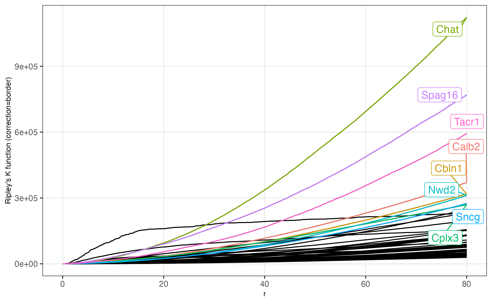
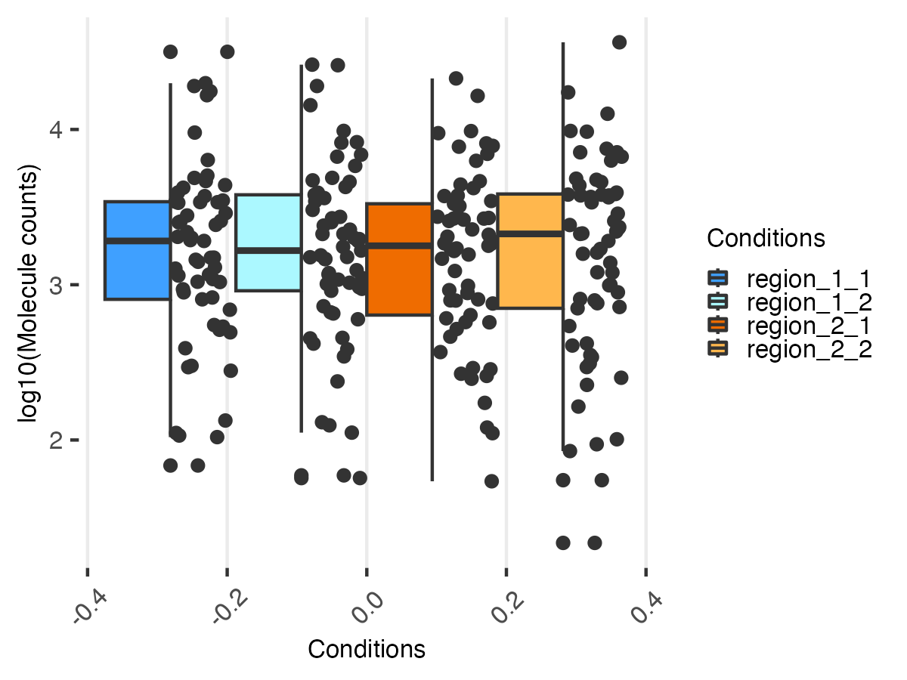

library(magrittr)
library(Seurat)
#> Loading required package: SeuratObject
#> Loading required package: sp
#> 'SeuratObject' was built under R 4.3.0 but the current version is
#> 4.3.3; it is recomended that you reinstall 'SeuratObject' as the ABI
#> for R may have changed
#> 'SeuratObject' was built with package 'Matrix' 1.6.3 but the current
#> version is 1.6.5; it is recomended that you reinstall 'SeuratObject' as
#> the ABI for 'Matrix' may have changed
#>
#> Attaching package: 'SeuratObject'
#> The following object is masked from 'package:base':
#>
#> intersect
library(STarlight)
STarlight::set_verb_level(0)
library(patchwork)
library(ggplot2)
library(dplyr)
#>
#> Attaching package: 'dplyr'
#> The following objects are masked from 'package:stats':
#>
#> filter, lag
#> The following objects are masked from 'package:base':
#>
#> intersect, setdiff, setequal, unionAbout
Spatial transcriptomics enables the spatially resolved measurement of
gene expression within tissue sections, providing valuable insights into
the spatial organization of biological processes. Assigning RNA
molecules to cells using a segmentation process is generally the first
step in the analysis. This approach can be tricky for a number of
reasons, including high cell density, the absence or poor quality of
surface labelling, etc. The STarlight package is intended
to perform analysis of RNA molecules using a grid-based approach
(sometimes referred as ‘rasterization’). The
load_spatial()is the entry point of the
STarlight package It will load the molecule coordinates and
create a 2D binned grid with default size 25µm.
Retrieving the dataset
Here, for demonstration purpose, we are using a subset (64 genes) of a 10x Genomics dataset tiny dataset used for Xenium Explorer Demo. The analyzed region corresponds to a fresh frozen section of the mouse Brain. The original dataset can be downloaded from here.
## create a temporary folder
tmpdir <- tempdir()
dir.create(tmpdir, showWarnings = FALSE)
remote_file <- "Xenium_Mouse_Brain_Coronal_tiny.csv.gz"
## Download and unzip the file
url_data <- paste0("https://zenodo.org/records/11371819/files/",
remote_file)
dest_file <- file.path(tmpdir, remote_file)
download.file(url_data, destfile = dest_file)Loading data
Here we load the data considering that the Xenium dataset is a simple csv flat file. If the full result directory is available you may use method=“xenium” and provide the path to the directory as argument to ‘path’.
st_obj <- load_spatial(path = dest_file,
method = "coordinates",
sep=",",
mapping = c(feature="feature_name",
x="x_location",
y="y_location"),
bin_size = 25,
control = "(NegControl)|(^BLANK)", verbose = FALSE)
##The STGrid object
The Spatial Transcriptomic Grid class (STGrid), serves as a fundamental structure for representing spatial transcriptomic analysis results. It provides a structured framework for managing and analyzing spatial transcriptomic data, facilitating comprehensive exploration and interpretation of spatial gene expression patterns within tissue sections.
STarlight::set_verb_level(1)
st_obj
STarlight::set_verb_level(0)
summary(st_obj)
slotNames(st_obj)
STarlight::show_st_methods()Subsetting
The subsetting function, implemented as a method for the “[” operator in the STGrid class, provides a versatile means of extracting subsets of data from an STGrid object. This function is designed to facilitate the extraction of specific genes or regions within the spatial transcriptomic data, allowing users to focus their analysis on relevant subsets of the dataset.
Subsetting using bin_x / bin_y
We can explore the binning information stored within our
st_obj STGrid object using the bin_x() and
bin_y() methods. Let’s take a look at the first few entries
of the bin_x and bin_y vectors:
This command retrieves the first few entries of the bin_x vector, providing insights into the bins along the x-axis.
Similarly, this command retrieves the first few entries of the
bin_y vector, offering insights into the bins along the
y-axis. Now, let’s leverage the subsetting function to extract data
corresponding to specific bins along the x-axis. Here, we retrieve data
associated with bins ranging from the 50th to the 100th entry of the
bin_x vector:
st_obj[bin_x(st_obj)[50:100], ]This command retrieves data from the STGrid object
st_obj corresponding to the specified range of bins along
the x-axis, providing a subset of spatial transcriptomic data for
further analysis.
Subsetting using genes
We can retrieve spatial transcriptomic data associated with specific genes from our st_obj STGrid object using the subsetting operator. Here we extract data corresponding to the “Rag1” and “Cd3e” genes:
st_obj[c("Chat", "Cbln4"), ]We may also remove all control probes from the STGrid object to focus our analysis on genes with meaningful expression levels.
st_obj <- rm_controls(st_obj)Subsetting using numeric
We can retrieve spatial transcriptomic data based on the position of
genes within the feat_names() vector of our
st_obj STGrid object. Let’s extract data for the first 10
genes according to their position in the feat_names() vector:
st_obj[feat_names(st_obj)[1:10], ]Next, let’s explore data for the 10th to 12th genes using numeric indices. To begin, let’s determine the total number of genes in our STGrid object:
nb_feat(st_obj)With this information, we can retrieve data for the 10th to 12th genes:
st_obj[10:12, ]This command retrieves spatial transcriptomic data for genes
positioned 10 through 12 in the feat_names() vector,
facilitating targeted analysis of specific gene subsets.
Image Visualization
The spatial_image() function
The spatial_image() function allows for the
visualization of the density of spatial molecules across the tissue
section. The following examples demonstrate the visualization of a
single gene. The grid=TRUE argument allow to show bin numbering in x and
y dimension. This eases the selection of particular regions.
One can zoom for instance in the region with high
“Ano1” molecule density in the upper right corner of the previous image.
Here we use rebin() to increase the resolution specifically
on “Ano1”.
x_bins <- bin_x(st_obj)[181:nbin_x(st_obj)]
y_bins <- bin_y(st_obj)[101:nbin_y(st_obj)]
st_obj_r1 <- st_obj[x_bins, y_bins]
spatial_image(re_bin(st_obj_r1[c("Ano1", "Chat"),], bin_size = 5, verbose = FALSE),
feat=c("Ano1", "Chat"), logb = 10,
scale = TRUE, saturation = 0.9)
The spatial_plot() function
The spatial_plot()function is intented to create a
scatter plot of molecule x/y coordinates. We may for example highlight
other molecules with same pattern as “Ano1”
spatial_plot(st_obj[x_bins, y_bins], feat_list = c("Ano1",
"Chat",
"Ebf3"),
colors = ggsci::pal_aaas()(3),
size=1)
Searching modules
The hc_tree() allow to organize genes into subclusters.
hc_st <- hc_tree(st_obj, method = "ward.D",
layout = "circular", dist_method = "pearson",
class_nb = 20)
hc_st
hc_st$tree_classes
#> $MOD01
#> [1] "Acsbg1" "Aqp4"
#>
#> $MOD02
#> [1] "Acta2" "Pln"
#>
#> $MOD03
#> [1] "Acvrl1" "Adgrl4"
#>
#> $MOD04
#> [1] "Adamts2" "Aldh1a2"
#>
#> $MOD05
#> [1] "Adamtsl1" "Cdh20" "Deptor" "Hat1"
#>
#> $MOD06
#> [1] "Ano1" "Chat" "Ebf3" "Kctd8" "Nwd2" "Sncg" "Tacr1"
#>
#> $MOD07
#> [1] "Arc" "Car4" "Cbln4" "Cdh4" "Cdh6" "Meis2"
#>
#> $MOD08
#> [1] "Arhgap12" "Arhgef28" "Bcl11b" "Bdnf" "Cabp7" "Cpne4" "Cpne6"
#> [8] "Orai2"
#>
#> $MOD09
#> [1] "Arhgap25" "Cdh13" "Col6a1" "Cwh43" "Fezf2" "Galnt14"
#>
#> $MOD10
#> [1] "Btbd11" "Cacna2d2"
#>
#> $MOD11
#> [1] "Calb2" "Cbln1" "Fign" "Inpp4b"
#>
#> $MOD12
#> [1] "Ccn2" "Cplx3"
#>
#> $MOD13
#> [1] "Cd24a" "Spag16"
#>
#> $MOD14
#> [1] "Cd300c2" "Cd53"
#>
#> $MOD15
#> [1] "Chodl" "Cort"
#>
#> $MOD16
#> [1] "Crh" "Igf1"
#>
#> $MOD17
#> [1] "Cspg4" "Gpr17"
#>
#> $MOD18
#> [1] "Hapln1" "Pde11a"
#>
#> $MOD19
#> [1] "Slc6a3"
#>
#> $MOD20
#> [1] "Th"Computing average module score:
st_obj <- compute_module_score(st_obj, modules = hc_st$tree_classes)
meta_names(st_obj)
#> [1] "count_sum" "MOD01" "MOD02" "MOD03" "MOD04" "MOD05"
#> [7] "MOD06" "MOD07" "MOD08" "MOD09" "MOD10" "MOD11"
#> [13] "MOD12" "MOD13" "MOD14" "MOD15" "MOD16" "MOD17"
#> [19] "MOD18" "MOD19" "MOD20"
spatial_image(st_obj, features = meta_names(st_obj))
spatial_image(st_obj, features = hc_st$tree_classes[["MOD07"]])Molecule clustering
K Ripley’s function
We may use the K-Ripley’s function to assess the level of clustering of each molecules in the two regions. Not that this step is rather long as the density of molecule increases. For the tutorial will thus concentrate on few genes.
gene_list <- c("Chat", "Spag16", "Tacr1", "Sncg", feat_names(st_obj)[1:10])
plot_rip_k(compute_k_ripley(st_obj, rmax = 80, verbose = FALSE))
spatial_image(st_obj, features = c("Chat", "Spag16", "Tacr1", "Nwd2"))Comparing counts
The stcompr() function is used to compare two sets of data. By way of illustration, and to limit the calculation time required for this vignette, we will use this function to compare two regions of the organ, which will be considered here as two conditions. Still for illustration purpose, we will generate two replicates per conditions/regions (in fact two close regions)
## "Conditions 1"
# "replicate 1"
x_bins <- bin_x(st_obj)[180:nbin_x(st_obj)]
y_bins <- bin_y(st_obj)[100:nbin_y(st_obj)]
st_obj_r1_1 <- st_obj[x_bins, y_bins]
# "replicate 2"
x_bins <- bin_x(st_obj)[170:200]
y_bins <- bin_y(st_obj)[90:130]
st_obj_r1_2 <- st_obj[x_bins, y_bins]
## "Conditions 2"
# "replicate 1"
x_bins <- bin_x(st_obj)[60:100]
y_bins <- bin_y(st_obj)[100:nbin_y(st_obj)]
st_obj_r2_1 <- st_obj[x_bins, y_bins]
# "replicate 2"
x_bins <- bin_x(st_obj)[50:90]
y_bins <- bin_y(st_obj)[80:130]
st_obj_r2_2 <- st_obj[x_bins, y_bins]Here is our illustrative dataset visualized using the cmp_images() function:
cmp_images(st_obj_r1_1,
st_obj_r1_2,
st_obj_r2_1,
st_obj_r2_2,
feat_list="count_sum",
names=c("region_1_1", "region_1_2", "region_2_1", "region_2_2"),
color_y_strip=c("pink", "pink", "lightblue", "lightblue"),
color_strip_text_y = "black",
color_x_strip="#333333",
colors = viridis::magma(10)
)And the count distribution for each replicate:
dist_st(st_obj_r1_1,
st_obj_r1_2,
st_obj_r2_1,
st_obj_r2_2,
transform = "log10")Count distributions
Here are the normalized counts:
cmp_boxplot(cmp, transform = "log10", normalized = TRUE)
Count comparison
As we can see below the two regions differ in the expression levels of several genes.
cmp_volcano(cmp, text_y_lim = 20, text_size = 2, text_x_lim = 2.5)
We may check the differential expression of these genes using the
cmp_images() function:
markers <- cmp@stat_test %>%
dplyr::filter(abs(log2_ratio) > 2.5) %>%
dplyr::arrange(log2_ratio) %>%
dplyr::filter(-log10(p_values) > 20) %>% rownames()
cmp_images(st_obj_r1_1,
st_obj_r1_2,
st_obj_r2_1,
st_obj_r2_2,
feat_list=markers,
names=c("region_1_1", "region_1_2", "region_2_1", "region_2_2"),
color_y_strip=c("pink", "pink", "lightblue", "lightblue"),
color_strip_text_y = "black",
color_x_strip= c("darkgreen", "darkgreen", "darkred", "darkred", "darkred"),
colors = viridis::magma(10))